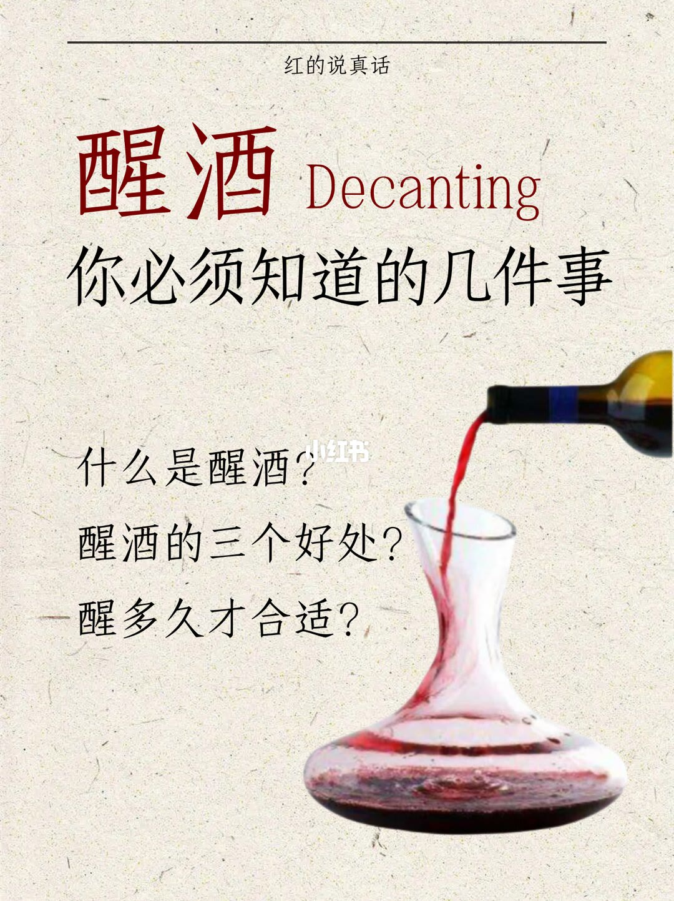
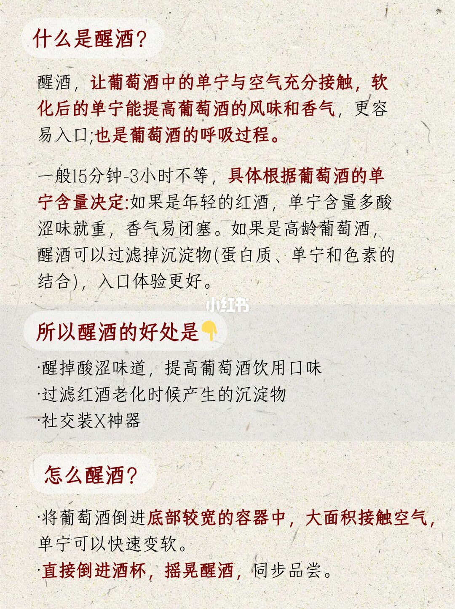
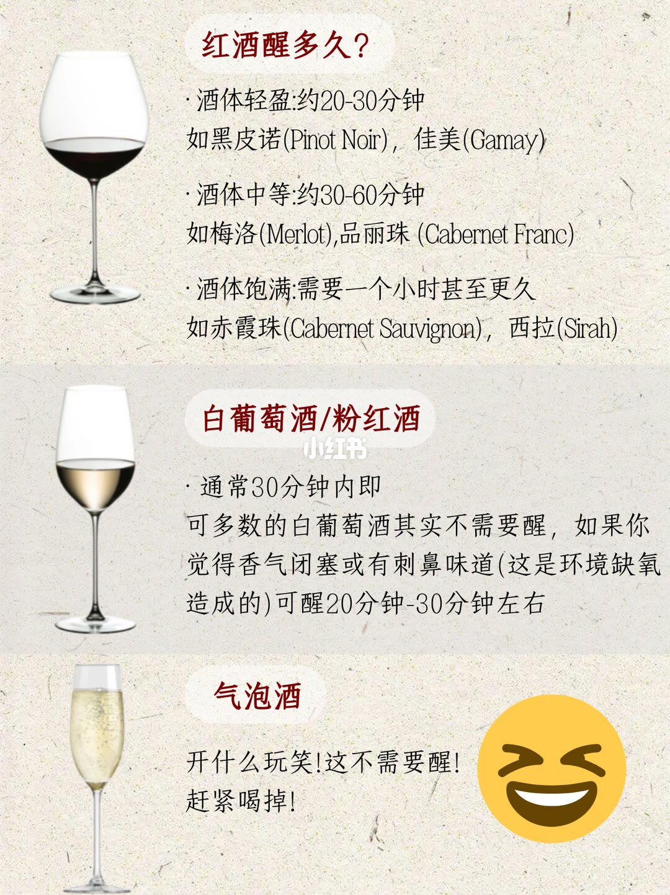

图文实录 · 小红书 · 红的说真话
醒酒很复杂？才没有！2张图说明白
封面先问三件事：什么是醒酒、三个好处、醒多久。后面两页才是标题说的两张图。第 2 页把醒酒写成单宁接触空气，并给了宽底容器和杯中摇晃两种倒法。第 3 页按红酒酒体给分钟，白葡萄酒和粉红酒写在同一栏，气泡酒直接说不用醒。
1/3
封面：三个问题

页顶居中写着「红的说真话」。主标题是红色的「醒酒」，旁边英文是 Decanting。下面一行黑字：「你必须知道的几件事」。左侧三问依次是：什么是醒酒？醒酒的三个好处？醒多久才合适？右侧能看到深色酒液倒进透明容器，瓶身和容器的具体器型细节无法确认。
这一页没有定义、没有分钟、也没有品种名。三个问题分别由第 2 页和第 3 页回答。
2/3
什么是醒酒，以及怎么倒

小标题「什么是醒酒？」。正文写：醒酒，让葡萄酒中的单宁与空气充分接触，软化后的单宁能提高葡萄酒的风味和香气，更容易入口；也是葡萄酒的呼吸过程。
时间先给一个总区间：一般 15 分钟到 3 小时不等，具体根据葡萄酒的单宁含量决定。年轻的红酒被写成单宁含量多、酸涩味就重、香气易闭塞。高龄葡萄酒则写醒酒可以过滤掉沉淀物，括号里是蛋白质、单宁和色素的结合，入口体验更好。这里没有写「高龄」是多少年，也没有写年轻酒要醒满 3 小时。
「所以醒酒的好处是」下面三条：醒掉酸涩味道，提高葡萄酒饮用口味；过滤红酒老化时候产生的沉淀物；社交装X神器。第三条用的就是图上的「装X」，没有展开成操作步骤。
「怎么醒酒？」两条。第一条：将葡萄酒倒进底部较宽的容器中，大面积接触空气，单宁可以快速变软。下一行没有再见到项目符号，写的是：直接倒进酒杯，摇晃醒酒，同步品尝。图上没有写摇多久、容器要不要先润洗、酒温是多少。
3/3
醒多久：红酒按酒体，气泡酒不醒

第一栏标题「红酒醒多久？」。酒体轻盈：约 20–30 分钟，例子是黑皮诺（Pinot Noir）、佳美。佳美括号里的拉丁字母多次识别为 Camay，和通行拼写 Gamay 的首字母不一致，压缩图上无法确认是排版还是识别误差。酒体中等：约 30–60 分钟，例子是梅洛（Merlot）、品丽珠（Cabernet Franc）。酒体饱满：需要一个小时甚至更久，例子是赤霞珠（Cabernet Sauvignon）、西拉。西拉的括号图上拼作 Sirah。
第二栏标题「白葡萄酒/粉红酒」。第一条写「通常 30 分钟内即可」，换行后接「多数的白葡萄酒其实不需要醒」。如果觉得香气闭塞或有刺鼻味道，括号里的原因写成「这是环境缺氧造成的」，可醒 20 分钟到 30 分钟左右。粉红酒只出现在栏目标题里，正文没有单独的分钟或品种。刺鼻味道没有写成火柴、橡胶或还原味。
第三栏标题「气泡酒」。正文是「开什么玩笑！这不需要醒！赶紧喝掉！」旁边有一张大笑表情。图上没有写气泡会不会散掉，也没有写例外的起泡酒。
收尾
时间跟酒体走，高龄酒图上只谈去渣
第 2 页把醒酒收成两件事：让单宁接触空气，以及滤掉高龄酒的沉淀。分钟数不在这一页展开，只给了 15 分钟到 3 小时、由单宁含量决定。第 3 页才把红酒拆成轻盈、中等、饱满三档，白葡萄酒默认不醒，只有香气闭塞或刺鼻时才给 20–30 分钟，气泡酒没有时间档。
两页没有对齐的地方要单独记住：饱满红酒写「一个小时甚至更久」，没有写是否停在第 2 页的 3 小时；高龄酒没有被写进第 3 页的任何一档，图上只说用醒酒过滤沉淀。佳美的拉丁拼写和西拉写成 Sirah，都以图上字形为准，不把通行拼写回填成图上原文。